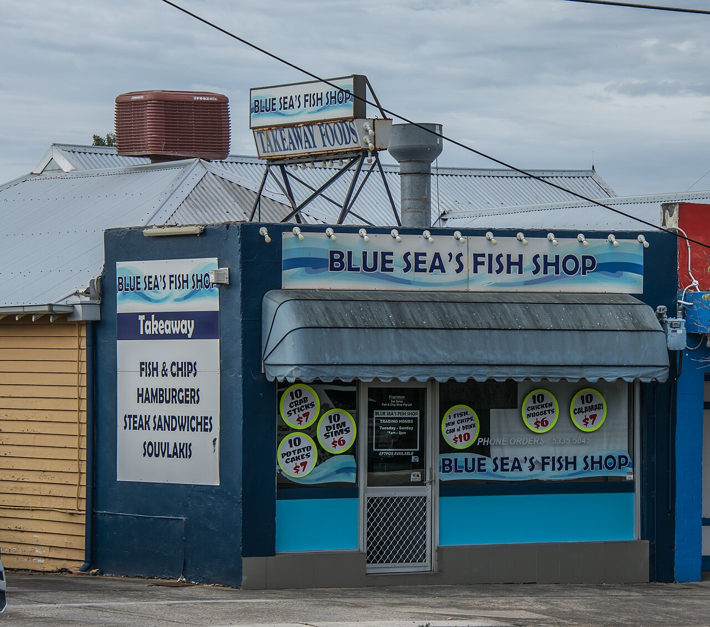

De frituur van Heks, met hart voor Haspengouw
Verse friet, huisgemaakte specialiteiten en een warme babbel — al meer dan 15 jaar de vaste stek voor lekkerbekken uit de streek.
Home › Over ons

Begonnen met één doel: de lekkerste friet van de streek
Frituur Het Haspengoud opende zijn deuren in Heks met een simpele overtuiging: friet moet vers, krokant en met liefde gebakken zijn. Geen diepvriesfriet, geen kant-en-klaar — maar echte streekaardappelen die we zelf snijden en twee keer bakken in ossewit.
Wat begon als een dorpsfrituur groeide uit tot een vaste waarde in de gemeente Heers. Van studenten na school tot families op vrijdagavond: iedereen vindt bij ons de smaak van thuis.
Onze belofte aan jou
Altijd vers
Verse aardappelen, dagelijks gesneden en gebakken op het moment zelf. Zo hoort het.
Ambachtelijk
Ons stoofvlees, onze curry en kroketten maken we volgens eigen recept. Huisgemaakt maakt het verschil.
Persoonlijk
We kennen onze klanten bij naam en bakken je bestelling zoals jij ze graag hebt. Service met een glimlach.
Streekgebonden
Trots op Haspengouw. Waar mogelijk werken we met lokale leveranciers uit de buurt.
Proper & verzorgd
Een nette keuken en een verzorgde toog — hygiëne staat bij ons voorop.
Vlot & vriendelijk
Bel vooraf en je bestelling staat warm klaar. Geen lange wachtrijen, wel veel smaak.
Zo maken wij jouw frietje
Verse aardappelen
We selecteren kwaliteitsaardappelen uit de streek en snijden ze dagelijks vers.
Eerste bak
De frietjes worden voorgebakken zodat het hart mooi zacht gaart.
Tweede bak
Op bestelling knapperig afgebakken in ossewit voor dat gouden korstje.
Klaar!
Vers in de puntzak, met de saus naar keuze. Smakelijk!
"Bij Het Haspengoud proef je dat het met liefde gebakken is."
Dat horen we graag — en daar doen we het elke dag voor. Kom het zelf ontdekken in Heks.
Zin gekregen in verse friet?
Bel je bestelling door of spring binnen in onze frituur in Heks. Wij staan voor je klaar.